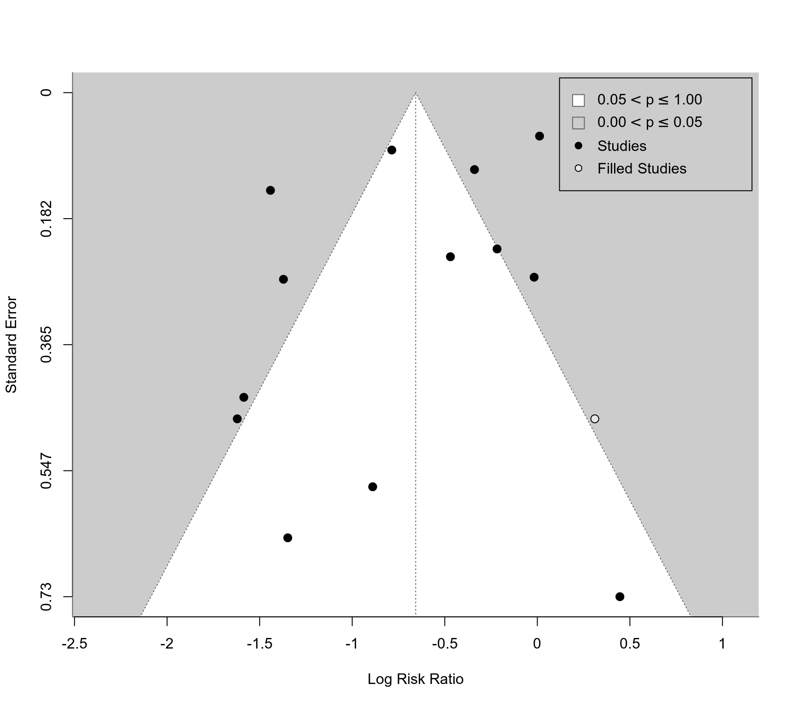

Trim and Fill Analysis for 'rma.uni' Objects
trimfill.RdCarry out a trim and fill analysis for objects of class "rma.uni".
trimfill(x, ...) # S3 method for rma.uni trimfill(x, side, estimator="L0", maxiter=100, verbose=FALSE, ilim, ...)
Arguments
| x | an object of class |
|---|---|
| side | either |
| estimator | either |
| maxiter | integer indicating the maximum number of iterations to use for the trim and fill method (the default is |
| verbose | logical indicating whether output should be generated on the progress of the iterative algorithm used as part of the trim and fill method (the default is |
| ilim | limits for the imputed values. If unspecified, no limits are used. |
| ... | other arguments. |
Details
The trim and fill method is a nonparametric (rank-based) data augmentation technique proposed by Duval and Tweedie (2000a, 2000b; see also Duval, 2005). The method can be used to estimate the number of studies missing from a meta-analysis due to the suppression of the most extreme results on one side of the funnel plot. The method then augments the observed data so that the funnel plot is more symmetric and recomputes the summary estimate based on the complete data. The trim and fill method can only be used in the context of a fixed- or random-effects model (i.e., in models without moderators). The method should not be regarded as a way of yielding a more "valid" estimate of the overall effect or outcome, but as a way of examining the sensitivity of the results to one particular selection mechanism (i.e., one particular form of publication bias).
Value
An object of class c("rma.uni.trimfill","rma.uni","rma"). The object is a list containing the same components as objects created by rma.uni, except that the data are augmented by the trim and fill method. The following components are also added:
estimated number of missing studies.
either "left" or "right", indicating on which side of the funnel plot the missing studies (if any) were imputed.
estimated standard error of k0.
p-value for the test of H_0: no missing studies on the chosen side (only when estimator="R0"; NA otherwise).
a logical vector, indicating which of the data are the observed (FALSE) and the augmented (TRUE) data.
Note
Three different estimators for the number of missing studies were proposed by Duval and Tweedie (2000a, 2000b). Based on these articles and Duval (2005), "R0" and "L0" are recommended. An advantage of estimator "R0" is that it provides a test of the null hypothesis that the number of missing studies (on the chosen side) is zero.
If the outcome measure used for the analysis is bounded (e.g., correlations are bounded between -1 and 1, proportions are bounded between 0 and 1), one can use the ilim argument to enforce those limits when imputing values (imputed values cannot exceed those bounds then).
References
Duval, S. J., & Tweedie, R. L. (2000a). Trim and fill: A simple funnel-plot-based method of testing and adjusting for publication bias in meta-analysis. Biometrics, 56, 455--463.
Duval, S. J., & Tweedie, R. L. (2000b). A nonparametric "trim and fill" method of accounting for publication bias in meta-analysis. Journal of the American Statistical Association, 95, 89--98.
Duval, S. J. (2005). The trim and fill method. In H. R. Rothstein, A. J. Sutton, & M. Borenstein (Eds.) Publication bias in meta-analysis: Prevention, assessment, and adjustments (pp. 127--144). Chichester, England: Wiley.
Viechtbauer, W. (2010). Conducting meta-analyses in R with the metafor package. Journal of Statistical Software, 36(3), 1--48. https://www.jstatsoft.org/v036/i03.
See also
Examples
### meta-analysis of the log risk ratios using a fixed-effects model res <- rma(measure="RR", ai=tpos, bi=tneg, ci=cpos, di=cneg, data=dat.bcg, method="FE") res.tf <- trimfill(res) res.tf#> #> Estimated number of missing studies on the right side: 4 (SE = 2.3853) #> #> Fixed-Effects Model (k = 17) #> #> I^2 (total heterogeneity / total variability): 93.91% #> H^2 (total variability / sampling variability): 16.42 #> #> Test for Heterogeneity: #> Q(df = 16) = 262.7316, p-val < .0001 #> #> Model Results: #> #> estimate se zval pval ci.lb ci.ub #> -0.2910 0.0383 -7.6057 <.0001 -0.3660 -0.2160 *** #> #> --- #> Signif. codes: 0 ‘***’ 0.001 ‘**’ 0.01 ‘*’ 0.05 ‘.’ 0.1 ‘ ’ 1 #>### estimator "R0" also provides test res.tf <- trimfill(res, estimator="R0") res.tf#> #> Estimated number of missing studies on the right side: 4 (SE = 3.1623) #> Test of H0: no missing studies on the right side: p-val = 0.0312 #> #> Fixed-Effects Model (k = 17) #> #> I^2 (total heterogeneity / total variability): 93.91% #> H^2 (total variability / sampling variability): 16.42 #> #> Test for Heterogeneity: #> Q(df = 16) = 262.7316, p-val < .0001 #> #> Model Results: #> #> estimate se zval pval ci.lb ci.ub #> -0.2910 0.0383 -7.6057 <.0001 -0.3660 -0.2160 *** #> #> --- #> Signif. codes: 0 ‘***’ 0.001 ‘**’ 0.01 ‘*’ 0.05 ‘.’ 0.1 ‘ ’ 1 #>### meta-analysis of the log risk ratios using a random-effects model res <- rma(measure="RR", ai=tpos, bi=tneg, ci=cpos, di=cneg, data=dat.bcg) res.tf <- trimfill(res) res.tf#> #> Estimated number of missing studies on the right side: 1 (SE = 2.4528) #> #> Random-Effects Model (k = 14; tau^2 estimator: REML) #> #> tau^2 (estimated amount of total heterogeneity): 0.3313 (SE = 0.1701) #> tau (square root of estimated tau^2 value): 0.5756 #> I^2 (total heterogeneity / total variability): 92.14% #> H^2 (total variability / sampling variability): 12.72 #> #> Test for Heterogeneity: #> Q(df = 13) = 154.6750, p-val < .0001 #> #> Model Results: #> #> estimate se zval pval ci.lb ci.ub #> -0.6571 0.1785 -3.6805 0.0002 -1.0070 -0.3072 *** #> #> --- #> Signif. codes: 0 ‘***’ 0.001 ‘**’ 0.01 ‘*’ 0.05 ‘.’ 0.1 ‘ ’ 1 #>